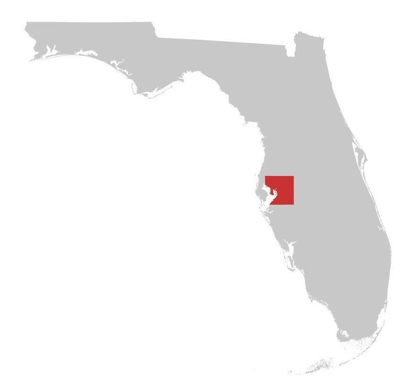

From One Beach to Many
Our History
What started as three friends and a pickup truck has grown into Tampa Bay's most active coastal cleanup organization.
Timeline
How we got here
Every milestone traced back to people who showed up on a Saturday morning.
CoastalCleans organizes its first official cleanup on St. Pete Beach. Fourteen volunteers collect 340 pounds of plastic in three hours. The group starts a group chat that night and decides to make it a regular thing.
14 volunteers · 340 lbs
Where We Are
Tampa Bay Chapter
Currently active in Hillsborough County and the greater Tampa Bay region.

Tampa Bay Chapter
Tampa Bay Chapter — Covering Hillsborough, Pinellas, Pasco, and Manatee counties.